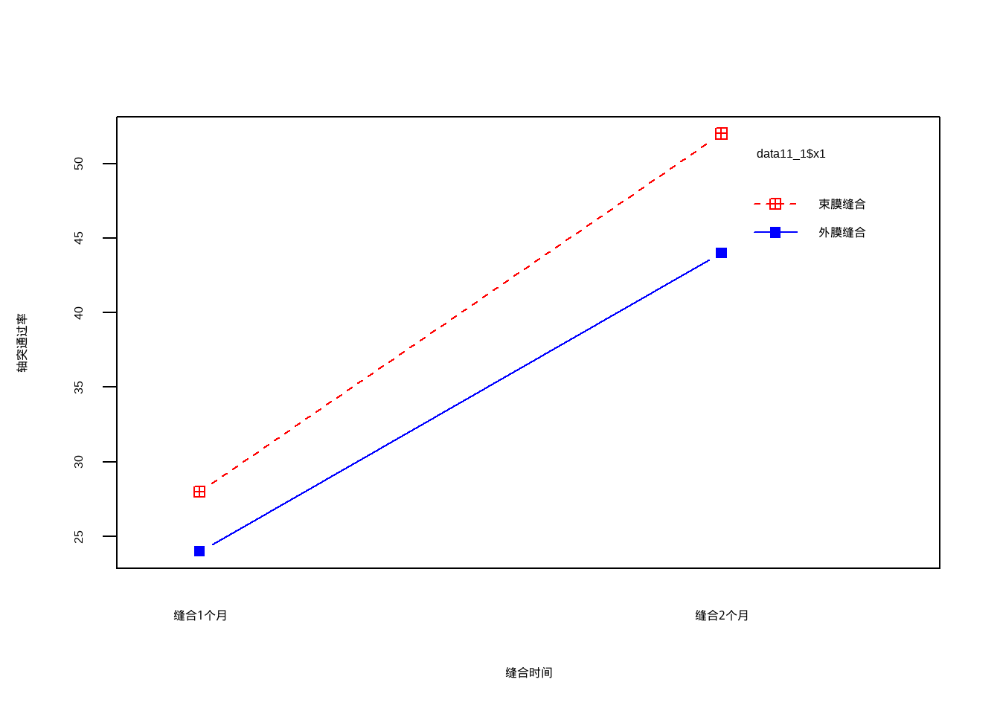
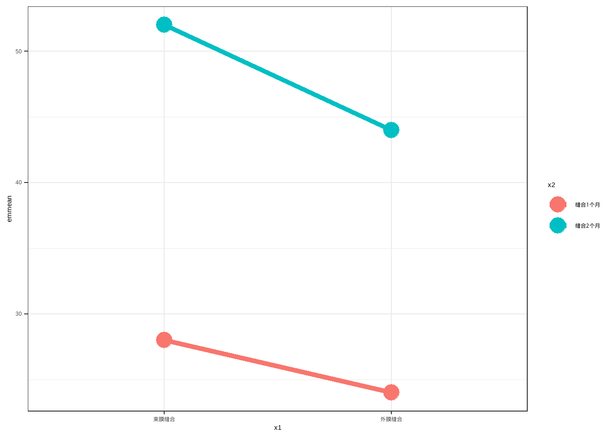
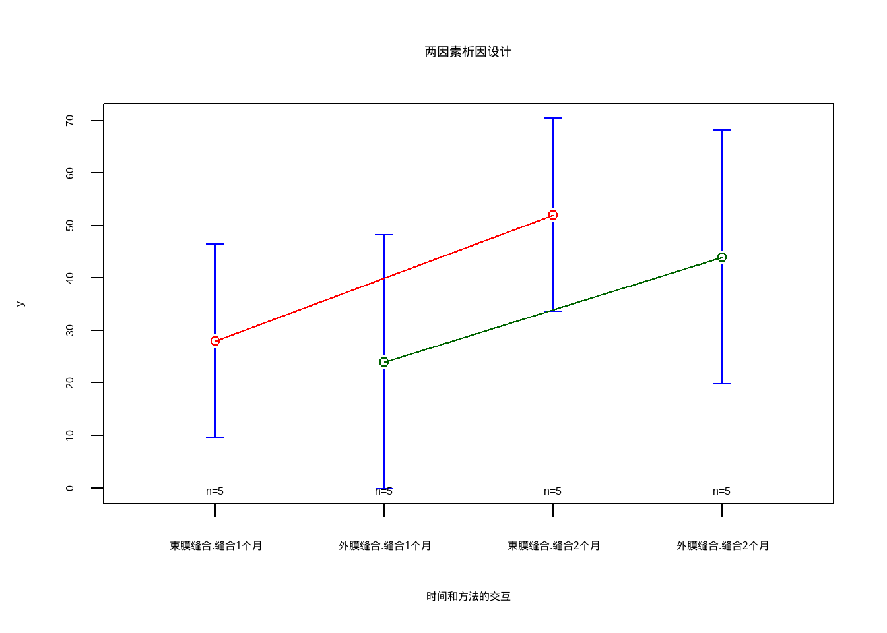
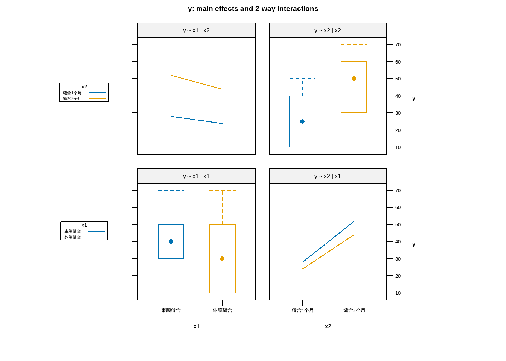
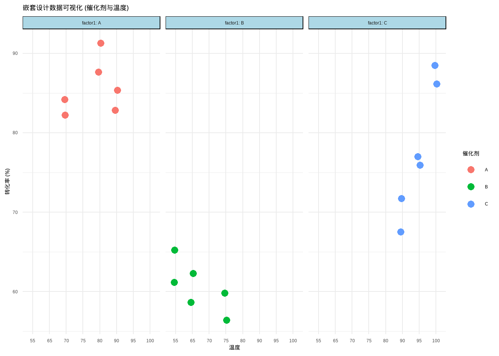
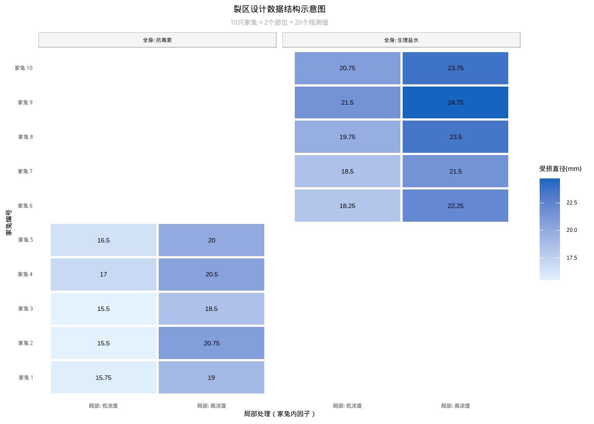
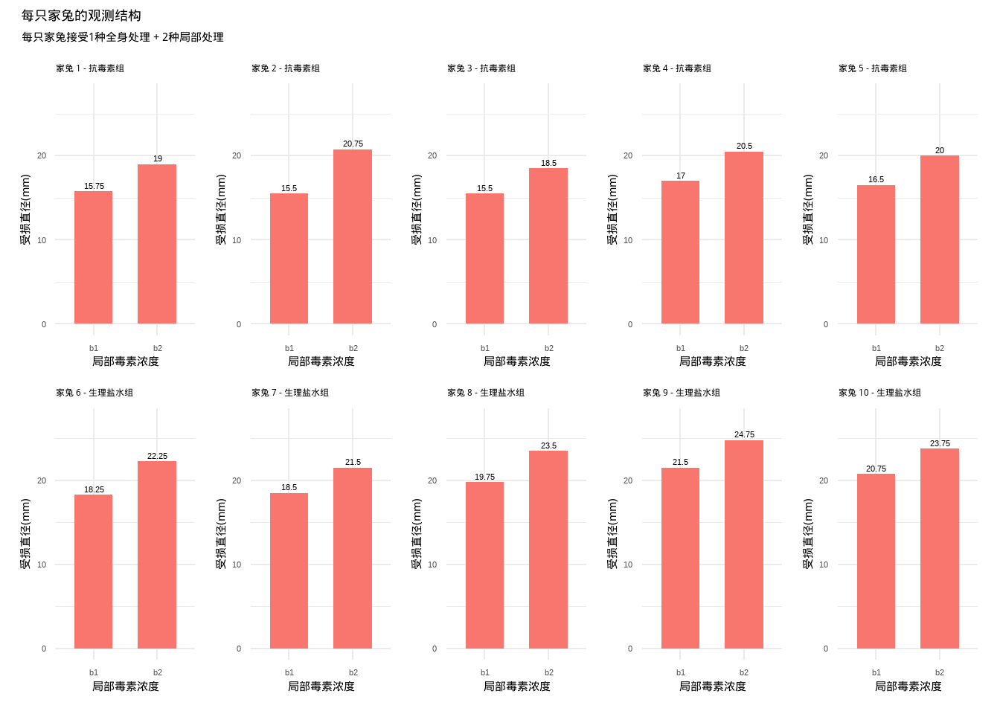

data11_1 <- data.frame(
x1 = rep(c("外膜缝合","束膜缝合"), each = 10),
x2 = rep(c("缝合1个月","缝合2个月"), each = 5),
y = c(10,10,40,50,10,30,30,70,60,30,10,20,30,50,30,50,50,70,60,30)
)
str(data11_1)
## 'data.frame': 20 obs. of 3 variables:
## $ x1: chr "外膜缝合" "外膜缝合" "外膜缝合" "外膜缝合" ...
## $ x2: chr "缝合1个月" "缝合1个月" "缝合1个月" "缝合1个月" ...
## $ y : num 10 10 40 50 10 30 30 70 60 30 ...
table(data11_1$x1,data11_1$x2)
##
## 缝合1个月 缝合2个月
## 束膜缝合 5 5
## 外膜缝合 5 515 多因素方差分析
本篇主要介绍R自带函数
aov()进行多因素方差分析，要获得afex和car::Anova()的详细介绍请在公众号医学和生信笔记后台回复方差分析。
在实际研究中，影响结果的因素往往不止一个。比如研究某种药物的疗效时，除了药物本身，患者的性别、年龄、用药剂量等都可能同时影响结果。如果我们对每个因素单独做方差分析，不仅效率低，还会遗漏一个重要信息——因素之间的交互作用。
多因素方差分析（Multi-way ANOVA）正是用来同时分析多个因素对结果变量影响的统计方法。它可以回答以下问题：
- 主效应：每个因素单独对结果有没有影响？
- 交互作用：多个因素联合起来，是否会产生”1+1≠2”的效果？
举个例子：A药和B药单独使用时效果一般，但联合使用时镇痛时间大幅延长——这就是典型的正交互作用。反之，两药合用反而效果下降，则为负交互作用。如果不考虑交互作用，单看主效应可能会得出错误的结论。
根据实验设计的不同，多因素方差分析有多种常见形式：
- 析因设计：所有因素的水平两两组合，全面估计主效应和交互作用
- 正交设计：因素和水平较多时，用正交表选取部分组合，减少实验次数
- 嵌套设计：某一因素的水平嵌套在另一因素之内，两者不能交叉
- 裂区设计：不同因素施加在不同层级的实验单位上，兼顾精度与可行性
15.1 2x2两因素析因设计资料的方差分析
析因设计是多因素实验设计中最”全面”的一种——将所有因素的水平进行两两组合，形成完整的实验格局。其核心优势在于不仅能估计每个因素的主效应，还能考察因素之间的交互作用（即某一因素的效果是否会随另一因素的变化而改变）。
析因设计的局限在于：当因素和水平数增多时，实验次数会急剧膨胀（如5因素4水平需要4⁵=1024次实验），此时可考虑正交设计作为替代方案。
使用孙振球《医学统计学》第4版例11-1的数据。
将20只家兔随机等分4组，每组5只，进行神经损伤后的缝合试验。处理由两个因素组合而成，A因素为缝合方法，有两个水平，一个水平为外膜缝合，记作a1，另一个水平为束膜缝合，记作a2。B因素为缝合后的时间，有两个水平，一个水平为缝合后1个月，记作b1，另一个水平为缝合后2个月，记作b2。试验结果为每只家免神经缝合后的轴突通过率（%）。欲比较不同缝合方法及缝合后时间对轴突通过率的影响，试做析因设计的方差分析。
数据一共3列，第1列是缝合方法，第2列是时间，第3列是轴突通过率。
进行析因设计资料的方差分析（考虑所有因素的主效应和交互作用）：
# 完全均衡的设计，调换变量顺序无影响，3种类型的平方和也是一样的
f1 <- aov(y ~ x1 * x2, data = data11_1)
summary(f1)
## Df Sum Sq Mean Sq F value Pr(>F)
## x1 1 180 180 0.600 0.4499
## x2 1 2420 2420 8.067 0.0118 *
## x1:x2 1 20 20 0.067 0.7995
## Residuals 16 4800 300
## ---
## Signif. codes: 0 '***' 0.001 '**' 0.01 '*' 0.05 '.' 0.1 ' ' 1结果是一个方差分析表。分别给出了A因素、B因素、AB交互作用、个体间的自由度、离均差平方和、均方误差、F值、P值，可以看到结果和书中（表11-5）是一致的。
注释说明
aov(y ~ x1 * x2, data = data11_1)等价于aov(y ~ x1 + x2 + x1:x2, data = data11_1)，表示x1的主效应、x2的主效应、x1和x2的交互效应。
A因素主效应所对应的检验假设为H0：A因素主效应=0；B因素主效应所对应的检验假设为H0：B因素主效应=0；AB交互作用所对应的检验假设为H0：AB交互作用=0。
本例只有B因素主效应的P值在0.01到0.05之间（P<0.05），拒绝H0，接受H1。因此只有B因素（缝合后时间）的主效应有统计学意义。
主效应（Main Effect）是指某个因素单独对结果变量的影响，不考虑其他因素的作用。比如在本例中，x1的主效应就是”缝合方法”这个因素对轴突通过率的整体影响——不管缝合后是1个月还是2个月，单看缝合方法本身有没有区别。
那主效应具体等于多少？这就需要用到边际均值（Marginal Mean）。边际均值是指在”平均掉”其他因素的影响后，某一因素各水平的均值。
用本例来理解：x1有两个水平（外膜缝合、束膜缝合），每种缝合方法下各有10只家兔，分别在1个月和2个月两个时间点观察。外膜缝合的边际均值，就是把”1个月”和”2个月”两组数据合并后算出的均值，相当于把缝合时间的影响抹掉，只看缝合方法本身的水平。
💡在均衡设计（即每个处理组的样本量相等）中，边际均值就等于各组样本均值的简单平均。本例每组均为5只家兔，所以直接取平均即可。如果各组样本量不等（不均衡设计），则需要用加权方式计算，此时直接用emmeans得到的结果比手算更可靠。
如何计算各因素的主效应呢？可以借助emmeans包，先把边际均值算出来。
library(emmeans)
# x1的边际均值
emmeans(f1, "x1")
## x1 emmean SE df lower.CL upper.CL
## 束膜缝合 40 5.48 16 28.4 51.6
## 外膜缝合 34 5.48 16 22.4 45.6
##
## Results are averaged over the levels of: x2
## Confidence level used: 0.95
# x2的边际均值
emmeans(f1, "x2")
## x2 emmean SE df lower.CL upper.CL
## 缝合1个月 26 5.48 16 14.4 37.6
## 缝合2个月 48 5.48 16 36.4 59.6
##
## Results are averaged over the levels of: x1
## Confidence level used: 0.95- x1主效应估计值为：40-34=6，解释为：在不考虑缝合时间的影响下，束膜缝合比外膜缝合的轴突通过率提高了6%；
- x2主效应估计值为：48-26=22，解释为：在不考虑缝合方法的影响下，缝合后2个月比缝合后1个月的轴突通过率提高了22%。
结合方差分析和边际均值的结果，本题结论为：尚不能认为两种缝合方法对神经轴突通过率有影响；AB的交互作用也不具有统计学意义；可以认为缝合后2个月与1个月相比，神经轴突通过率提高了22%。
本例中AB交互作用的P值为0.7995，远大于0.05，因此可以认为两个因素之间不存在交互作用，缝合方法的效果不会因缝合时间不同而改变，此时直接报告和解释主效应是合适的。
交互作用（Interaction）是指两个因素对结果的联合影响，不能简单地用各自主效应相加来解释。换句话说，如果A因素的效应会随着B因素水平的不同而变化，那么A和B之间就存在交互作用。
用本例来理解：如果”缝合方法”的效果在1个月和2个月时是一样的，那就没有交互作用；但如果某种缝合方法在1个月时效果一般、2个月时效果突出（或者反过来），那两个因素之间就存在交互作用。
交互作用最直观的判断方式是看交互作用图——如果两条折线大致平行，说明没有交互作用；如果两条线出现明显的交叉或”剪刀差”，则提示存在交互作用。
# R自带函数，无需加载R包
# 两条线基本平行，说明没有交互作用
interaction.plot(data11_1$x2, data11_1$x1, data11_1$y, type = "b",
col = c("red","blue"), pch = c(12,15),
xlab = "缝合时间", ylab = "轴突通过率")
💡如果交互作用显著，该怎么办？
当交互作用存在时，主效应（边际均值之差）会把不同条件下的效果”平均掉”，可能掩盖甚至歪曲真实情况，此时不建议单独解读主效应。正确的做法是转而分析简单效应（Simple Effect，也叫单独效应）——即固定某一因素在某个水平上，再看另一个因素的效果。
因此就会有两种情况：
- 固定x2，在x2的每个水平下比较x1的各水平之间有没有差别。即”缝合1个月时，两种缝合方法有没有差别？缝合2个月时，两种缝合方法有没有差别？”
- 固定x1，在x1的每个水平下比较x2的各水平之间有没有差别。即”外膜缝合时，1个月和2个月有没有差别？束膜缝合时，1个月和2个月有没有差别？”
下面我们以第1种情况为例，演示一下如何分析简单效应。
# 先计算各个单元格的边际均值，然后计算各因素简单效应
# 在均衡设计中，边际均值等于样本均值；不均衡设计中两者可能不同，建议以emmeans的结果为准
emm <- emmeans(f1, ~ x1 | x2)
emm
## x2 = 缝合1个月:
## x1 emmean SE df lower.CL upper.CL
## 束膜缝合 28 7.75 16 11.58 44.4
## 外膜缝合 24 7.75 16 7.58 40.4
##
## x2 = 缝合2个月:
## x1 emmean SE df lower.CL upper.CL
## 束膜缝合 52 7.75 16 35.58 68.4
## 外膜缝合 44 7.75 16 27.58 60.4
##
## Confidence level used: 0.95- 缝合时间为1个月时，x1（缝合方法）的简单效应估计值为：28-24=4；
- 缝合时间为2个月时，x1（缝合方法）的简单效应估计值为：52-44=8；
- 束膜缝合时，x2（缝合时间）的简单效应估计值为：52-28=24；
- 外膜缝合时，x2（缝合时间）的简单效应估计值为：44-24=20。
这个结果给出的是每个处理组合的边际均值，也就是2×2=4个单元格各自的估计均值。在交互作用显著的情况下，这张表本身只是描述性的，告诉你每种组合下轴突通过率的估计值是多少，还不能直接回答”哪两组有差别”。如果要比较不同处理组合之间的差别，还需要进行事后检验（Post-hoc Test），可以使用emmeans的contrast函数：
# 进行事后检验，默认Tukey法调整多重比较的P值
contrast(emm, method = "pairwise")
## x2 = 缝合1个月:
## contrast estimate SE df t.ratio p.value
## 束膜缝合 - 外膜缝合 4 11 16 0.365 0.7198
##
## x2 = 缝合2个月:
## contrast estimate SE df t.ratio p.value
## 束膜缝合 - 外膜缝合 8 11 16 0.730 0.4758
# 等价于以下写法
# pairs(emm)结果表明，不管是在缝合1个月还是缝合2个月的情况下，束膜缝合和外膜缝合之间的差别都不具有统计学意义；
顺手也可以对第2种情况做个简单效应分析：
pairs(emmeans(f1, ~ x2 | x1))
## x1 = 束膜缝合:
## contrast estimate SE df t.ratio p.value
## 缝合1个月 - 缝合2个月 -24 11 16 -2.191 0.0436
##
## x1 = 外膜缝合:
## contrast estimate SE df t.ratio p.value
## 缝合1个月 - 缝合2个月 -20 11 16 -1.826 0.0866结果表明，束膜缝合下，缝合后2个月和缝合后1个月的轴突通过率有差别，2个月后的轴突通过率比1个月后高了24%（见emm的结果），差异具有统计学意义（P=0.0436）；外膜缝合下，不同缝合时间的轴突通过率没有统计学意义。
emm这个结果可以直接保存为数据框，然后画图：
plot_df <- as.data.frame(emm)
plot_df
## x2 = 缝合1个月:
## x1 emmean SE df lower.CL upper.CL
## 束膜缝合 28 7.745967 16 11.57928 44.42072
## 外膜缝合 24 7.745967 16 7.57928 40.42072
##
## x2 = 缝合2个月:
## x1 emmean SE df lower.CL upper.CL
## 束膜缝合 52 7.745967 16 35.57928 68.42072
## 外膜缝合 44 7.745967 16 27.57928 60.42072
##
## Confidence level used: 0.95
library(ggplot2)
ggplot(plot_df,aes(x1,emmean))+
geom_line(aes(color=x2,group=x2),linewidth=2)+
geom_point(aes(color=x2),size=6)+
theme_bw()
最好是在一开始就把分类变量变成factor，然后规定好level，这样画图也方便。
简单介绍一下另外一种可视化两因素析因设计的方法：
library(gplots)
plotmeans(y ~ interaction(x1,x2),data=data11_1,
connect = list(c(1,3), c(2,4)),
col = c("red","darkgreen"),
main = "两因素析因设计",
xlab = "时间和方法的交互")
再介绍一种方法：
library(HH)
interaction2wt(y ~ x1 * x2,data = data11_1)
15.2 IxJ两因素析因设计资料的方差分析
使用孙振球《医学统计学》第4版例11-2的数据。
观察A、B两种镇痛药物联合运用在产妇分娩时的镇痛效果。A药取3个剂量：1.0mg、2.5mg、5.0mg；B药也取3个剂量：5μg、15μg、30μg。共9个处理组。将27名产妇随机等分为9组，每组3名产妇，记录每名产妇分娩时的镇痛时间。试分析A、B两药联合运用的镇痛效果。
data11_2 <- data.frame(
druga = rep(c("1mg","2.5mg","5mg"), each = 3),
drugb = rep(c("5微克","15微克","30微克"),each = 9),
y = c(105,80,65,75,115,80,85,120,125,115,105,80,125,130,90,65,
120,100,75,95,85,135,120,150,180,190,160)
)
str(data11_2)
## 'data.frame': 27 obs. of 3 variables:
## $ druga: chr "1mg" "1mg" "1mg" "2.5mg" ...
## $ drugb: chr "5微克" "5微克" "5微克" "5微克" ...
## $ y : num 105 80 65 75 115 80 85 120 125 115 ...
head(data11_2)
## druga drugb y
## 1 1mg 5微克 105
## 2 1mg 5微克 80
## 3 1mg 5微克 65
## 4 2.5mg 5微克 75
## 5 2.5mg 5微克 115
## 6 2.5mg 5微克 80
table(data11_2$druga,data11_2$drugb)
##
## 15微克 30微克 5微克
## 1mg 3 3 3
## 2.5mg 3 3 3
## 5mg 3 3 3数据一共3列，第1列是a药物的剂量（3种剂量，代表3个水平），第2列是b药物的剂量（3种剂量），第3列是镇痛时间。
进行两因素三水平的析因设计资料方差分析（考虑所有因素的主效应和交互作用）：
# 由于这是一个均衡设计，因此3种类型的平方和结果相同，且变量顺序对结果无影响
f2 <- aov(y ~ druga * drugb, data = data11_2)
summary(f2)
## Df Sum Sq Mean Sq F value Pr(>F)
## druga 2 6572 3286 8.470 0.00256 **
## drugb 2 7022 3511 9.050 0.00190 **
## druga:drugb 4 7872 1968 5.073 0.00647 **
## Residuals 18 6983 388
## ---
## Signif. codes: 0 '***' 0.001 '**' 0.01 '*' 0.05 '.' 0.1 ' ' 1结果和表11-9也是一模一样的！
结论：①A药不同剂量的镇痛效果不同；②B药不同剂量的镇痛效果不同；③A、B两药有交互作用，A药5.0mg和B药30μg时，镇痛时间持续最长。
有交互作用的情况下，单独解读主效应可能会产生误导，更推荐分析简单效应。代码请参考上面2x2两因素析因设计资料的方差分析部分。
15.3 IxJxK三因素析因设计资料的方差分析
使用孙振球《医学统计学》第4版例11-3的数据。
用5×2×2析因设计研究5种类型的军装在两种环境、两种活动状态下的散热效果，将100名受试者随机等分20组，观察指标是受试者的主观热感觉（从“冷”到“热”按等级评分）。试进行方差分析。
data11_3 <- foreign::read.spss("datasets/例11-03-5种军装热感觉5-2-2.sav",
to.data.frame = T)
data11_3$a <- factor(data11_3$a)
str(data11_3)
## 'data.frame': 100 obs. of 4 variables:
## $ b: Factor w/ 2 levels "干燥","潮湿": 1 1 1 1 1 1 1 1 1 1 ...
## $ c: Factor w/ 2 levels "静坐","活动": 1 1 1 1 1 1 1 1 1 1 ...
## $ a: Factor w/ 5 levels "1","2","3","4",..: 1 1 1 1 1 2 2 2 2 2 ...
## $ x: num 0.25 -0.25 1.25 -0.75 0.4 ...
## - attr(*, "variable.labels")= Named chr [1:4] "活动环境" "活动状态" "军装类型" "主观热感觉"
## ..- attr(*, "names")= chr [1:4] "b" "c" "a" "x"
## - attr(*, "codepage")= int 65001
head(data11_3)
## b c a x
## 1 干燥 静坐 1 0.25
## 2 干燥 静坐 1 -0.25
## 3 干燥 静坐 1 1.25
## 4 干燥 静坐 1 -0.75
## 5 干燥 静坐 1 0.40
## 6 干燥 静坐 2 0.30- a：军装类型，5个类型
- b：活动环境：干燥和潮湿
- c：活动状态：静坐和活动
进行3因素析因设计资料的方差分析（考虑所有的主效应和交互作用）：
# 均衡设计，因此3种类型的平方和结果相同，且变量顺序对结果无影响
f3 <- aov(x ~ a * b * c, data = data11_3)
summary(f3)
## Df Sum Sq Mean Sq F value Pr(>F)
## a 4 5.20 1.30 3.024 0.0224 *
## b 1 9.94 9.94 23.138 6.98e-06 ***
## c 1 283.35 283.35 659.485 < 2e-16 ***
## a:b 4 1.94 0.48 1.128 0.3491
## a:c 4 1.48 0.37 0.862 0.4905
## b:c 1 12.68 12.68 29.514 5.82e-07 ***
## a:b:c 4 1.61 0.40 0.937 0.4472
## Residuals 80 34.37 0.43
## ---
## Signif. codes: 0 '***' 0.001 '**' 0.01 '*' 0.05 '.' 0.1 ' ' 1结果也是和表11-12一模一样。
结论：不同军装(a)、不同环境(b)和不同活动状态(c)的主观热感觉的主效应都有差别，但尚不能认为军装类型的主观热感觉与其他两个试验因素（环境、活动状态）存在交互作用(a:b,a:c,a:b：c)。
进一步计算不同军装类型(a)的主观热感觉小计（加和）可得：第4种类型的军装具有散热效果，第5种类型的军装具有保温效果。
# 不同军装类型的主观热感觉小计
tapply(data11_3$x,data11_3$a,sum)
## 1 2 3 4 5
## 51.80 52.22 51.10 43.81 58.1415.4 正交设计资料的方差分析
正交设计是析因设计的一种缩减方案——在因素和水平较多时，全面析因设计的实验次数会急剧增加，正交设计通过选取一部分有代表性的组合（正交表），在保证主效应可估的前提下大幅减少实验次数。正交设计的核心特点是用部分实验组合（正交表）来估计主效应，同时牺牲高阶交互作用的信息。
使用孙振球《医学统计学》第4版例11-4的数据。
研究雌螺产卵的最优条件，在20cm²的泥盒里饲养同龄雌螺10只，试验条件有4个因素，每个因素2个水平。试在考虑温度与含氧量对雌螺产卵有交互作用的情况下安排正交试验。
data11_4 <- data.frame(
a = rep(c("5度","25度"),each = 4),
b = rep(c(0.5, 5.0), each = 2),
c = c(10, 30),
d = c(6.0, 8.0,8.0,6.0,8.0,6.0,6.0,8.0),
x = c(86,95,91,94,91,96,83,88)
)
data11_4$a <- factor(data11_4$a)
data11_4$b <- factor(data11_4$b)
data11_4$c <- factor(data11_4$c)
data11_4$d <- factor(data11_4$d)
str(data11_4)
## 'data.frame': 8 obs. of 5 variables:
## $ a: Factor w/ 2 levels "25度","5度": 2 2 2 2 1 1 1 1
## $ b: Factor w/ 2 levels "0.5","5": 1 1 2 2 1 1 2 2
## $ c: Factor w/ 2 levels "10","30": 1 2 1 2 1 2 1 2
## $ d: Factor w/ 2 levels "6","8": 1 2 2 1 2 1 1 2
## $ x: num 86 95 91 94 91 96 83 88
head(data11_4)
## a b c d x
## 1 5度 0.5 10 6 86
## 2 5度 0.5 30 8 95
## 3 5度 5 10 8 91
## 4 5度 5 30 6 94
## 5 25度 0.5 10 8 91
## 6 25度 0.5 30 6 96进行正交设计资料的方差分析，只考虑4个因素的主效应以及a和b的一阶交互作用：
# 均衡设计，因此3种类型的平方和结果相同，且变量顺序对结果无影响
f4 <- aov(x ~ a + b + c + d + a:b, data = data11_4)
summary(f4)
## Df Sum Sq Mean Sq F value Pr(>F)
## a 1 8.0 8.0 3.2 0.2155
## b 1 18.0 18.0 7.2 0.1153
## c 1 60.5 60.5 24.2 0.0389 *
## d 1 4.5 4.5 1.8 0.3118
## a:b 1 50.0 50.0 20.0 0.0465 *
## Residuals 2 5.0 2.5
## ---
## Signif. codes: 0 '***' 0.001 '**' 0.01 '*' 0.05 '.' 0.1 ' ' 1结果和表11-23一模一样，结论：雌螺产卵条件主要与泥土含水量(c)、温度与含氧量的交互作用(a:b)有关。
15.5 嵌套设计资料的方差分析
嵌套设计（也称系统分组设计）用于描述因素之间存在层级包含关系的情形——二级因素的水平并不是在所有一级因素水平下都相同，而是每个一级水平下各自拥有一套独立的二级水平。换言之，两个因素之间只有”包含”关系，没有”交叉”关系，因此不能估计交互作用，只能分别估计各层级因素的主效应。
嵌套设计的方差分析也是要注意指定主效应和交互效应。
使用孙振球《医学统计学》第4版例11-6的数据。
试验甲、乙、丙3种催化剂在不同温度下对某化合物的转化作用。由于各催化剂所要求的温度范围不同，将催化剂作为一级实验因素（I=3），温度作为二级实验因素（J=3），采用嵌套设计，每个处理重复2次（n=2）。试做方差分析。
data11_6 <- data.frame(
factor1 = factor(rep(c("A","B","C"),each=6)),
factor2 = factor(rep(c(70,80,90,55,65,75,90,95,100),each=2)),
y = c(82,84,91,88,85,83,65,61,62,59,56,60,71,67,75,78,85,89)
)
str(data11_6)
## 'data.frame': 18 obs. of 3 variables:
## $ factor1: Factor w/ 3 levels "A","B","C": 1 1 1 1 1 1 2 2 2 2 ...
## $ factor2: Factor w/ 8 levels "55","65","70",..: 3 3 5 5 6 6 1 1 2 2 ...
## $ y : num 82 84 91 88 85 83 65 61 62 59 ...
head(data11_6)
## factor1 factor2 y
## 1 A 70 82
## 2 A 70 84
## 3 A 80 91
## 4 A 80 88
## 5 A 90 85
## 6 A 90 83factor1是一级实验因素（不同的催化剂），factor2是二级实验因素（不同的温度），y是因变量。
对这个数据做个简单的可视化，方便查看研究设计结构：
library(ggplot2)
ggplot(data11_6, aes(x = factor2, y = y)) +
# 绘制原始数据点（轻微抖动避免重叠），按催化剂分色
geom_jitter(aes(color = factor1), width = 0.1, size = 3) +
facet_wrap(~factor1, labeller = label_both) +
labs(title = "嵌套设计数据可视化 (催化剂与温度)",
x = "温度",
y = "转化率 (%)",
color = "催化剂") +
theme_minimal() +
theme(axis.text.x = element_text(angle = 0, hjust = 0.5),
strip.background = element_rect(fill = "lightblue"))
进行嵌套实验设计的方差分析：
# “/”表示factor2嵌套在factor1里
f <- aov(y ~ factor1 / factor2, data = data11_6)
# 等价于以下写法：
#f <- aov(y ~ factor1 + factor1:factor2, data = data11_6)
summary(f)
## Df Sum Sq Mean Sq F value Pr(>F)
## factor1 2 1956.0 978.0 177.82 5.83e-08 ***
## factor1:factor2 6 401.0 66.8 12.15 0.000716 ***
## Residuals 9 49.5 5.5
## ---
## Signif. codes: 0 '***' 0.001 '**' 0.01 '*' 0.05 '.' 0.1 ' ' 1结果和表11-26相同。
结论：催化剂(factor1)影响该化合物的转化率。对于同一催化剂，不同温度(factor2)对转化率亦有影响。
15.6 裂区设计资料的方差分析
裂区设计常见于实验条件的改变存在难度差异的场景：某些因素（主区因素）的水平切换代价大、操作困难，只能在粗粒度的实验单位（一级单位）上随机分配；另一些因素（副区因素）则可以在更细的实验单位（二级单位）内自由随机化，从而兼顾实验的可行性与精度。
本篇以家兔皮肤损伤保护实验为例（全身注射药物为主区因素，局部毒素浓度为副区因素），演示了如何用aov()中的Error(id/factorB)语法为不同层级的因素指定各自的误差项，将方差分解为”一级单位间”和”二级单位间”两部分分别检验。
值得注意的是，裂区设计的数据结构与两因素重复测量设计高度相似，两者的分析思路也是相通的，区分时需结合实验的随机化方式来判断。
使用孙振球《医学统计学》第4版例11-7的数据。这是一个完全随机的2*2裂区设计，家兔为一级实验单位，注射部位为二级实验单位。
试验一种全身注射抗毒素对皮肤损伤的保护作用，将10只家兔随机等分两组，一组注射抗毒素，一组注射生理盐水作对照。分组后，每只家兔取甲、乙两部位，分别随机分配注射低浓度毒素和高浓度毒素，观察指标为皮肤受损直径（mm）。试做方差分析。
data11_7 <- data.frame(
factorA = factor(rep(c("a1","a2"),each=10)),
factorB = factor(rep(c("b1","b2"),10)),
id = factor(rep(c(1:10),each=2)),
y = c(15.75,19.00,15.50,20.75,15.50,18.50,17.00,20.50,16.50,20.00,
18.25,22.25,18.50,21.50,19.75,23.50,21.50,24.75,20.75,23.75)
)
str(data11_7)
## 'data.frame': 20 obs. of 4 variables:
## $ factorA: Factor w/ 2 levels "a1","a2": 1 1 1 1 1 1 1 1 1 1 ...
## $ factorB: Factor w/ 2 levels "b1","b2": 1 2 1 2 1 2 1 2 1 2 ...
## $ id : Factor w/ 10 levels "1","2","3","4",..: 1 1 2 2 3 3 4 4 5 5 ...
## $ y : num 15.8 19 15.5 20.8 15.5 ...
head(data11_7)
## factorA factorB id y
## 1 a1 b1 1 15.75
## 2 a1 b2 1 19.00
## 3 a1 b1 2 15.50
## 4 a1 b2 2 20.75
## 5 a1 b1 3 15.50
## 6 a1 b2 3 18.50裂区设计的A因素只作用于一级实验单位，B因素只作用于二级实验单位，所以其方差分析也是由两部分组成（P183）。如果你认真观察，你会发现这这个数据结构和两因素重复测量数据结构一致。
只看数据和代码对于了解数据结构不够直观，下面画两个图，展示数据结构：
# 创建一个直观的数据布局图
library(dplyr)
library(ggplot2)
# 准备绘图数据
plot_data <- data11_7 %>%
mutate(
factorA_label = factor(ifelse(factorA == "a1", "全身: 抗毒素", "全身: 生理盐水")),
factorB_label = factor(ifelse(factorB == "b1", "局部: 低浓度", "局部: 高浓度"),
levels = c("局部: 低浓度", "局部: 高浓度")),
id_label = paste("家兔", id)
)
# 创建热图风格的数据视图
ggplot(plot_data, aes(x = factorB_label, y = reorder(id_label, as.numeric(id)))) +
geom_tile(aes(fill = y), color = "white", size = 1) +
geom_text(aes(label = round(y, 2)), color = "black", size = 4) +
facet_grid(. ~ factorA_label, scales = "free", space = "free") +
scale_fill_gradient(low = "#e3f2fd", high = "#1565c0", name = "受损直径(mm)") +
labs(
title = "裂区设计数据结构示意图",
subtitle = "10只家兔 × 2个部位 = 20个观测值",
x = "局部处理（家兔内因子）",
y = "家兔编号"
) +
theme_minimal() +
theme(
plot.title = element_text(hjust = 0.5, face = "bold", size = 14),
plot.subtitle = element_text(hjust = 0.5, color = "darkgray"),
axis.text.x = element_text(angle = 0, hjust = 0.5),
panel.grid.major = element_blank(),
panel.grid.minor = element_blank(),
strip.background = element_rect(fill = "#f5f5f5", color = "gray"),
strip.text = element_text(face = "bold")
)
# 更详细的每只家兔内部结构
library(patchwork)
# 为每只家兔创建一个小图
plot_list <- list()
for(i in 1:10) {
rabbit_data <- data11_7 %>% filter(id == i)
p <- ggplot(rabbit_data, aes(x = factorB, y = y, fill = factorA)) +
geom_bar(stat = "identity", width = 0.6) +
geom_text(aes(label = round(y, 2)), vjust = -0.5, size = 3) +
ylim(0, max(data11_7$y) * 1.1) +
labs(
title = paste("家兔", i, "-",
ifelse(unique(rabbit_data$factorA) == "a1",
"抗毒素组", "生理盐水组")),
x = "局部毒素浓度",
y = "受损直径(mm)"
) +
theme_minimal() +
theme(
plot.title = element_text(size = 9),
axis.text = element_text(size = 8),
legend.position = "none"
)
plot_list[[i]] <- p
}
# 排列所有小图
wrap_plots(plot_list, ncol = 5) +
plot_annotation(
title = "每只家兔的观测结构",
subtitle = "每只家兔接受1种全身处理 + 2种局部处理"
)
该例题中每只家兔对应着B因素（毒素浓度）的两个水平（每只家兔会注射两种浓度的毒素），但每只家兔只对应A因素的1个水平（每只家兔只会注射一种药物，不会同时注射两种药物，要么注射抗毒素，要么注射生理盐水），所以需要为B因素指定误差项。
该数据和两因素两水平重复测量设计的结构完全一致：
- A因素可以看作是组别因素
- B因素可以看作是时间因素
裂区设计中B因素的不同水平施加在同一实验单位的不同部位（空间重复），而重复测量是同一实验单位在不同时间点测量，两者误差结构相同，所以可以用相同的分析方法，但实验背景不同。
# factorB is nested in id，每个id对应多个factorB
# factorA和factorB有交叉，但是id只和factorB有交叉
f <- aov(y ~ factorA * factorB + Error(id/factorB), data = data11_7)
summary(f)
##
## Error: id
## Df Sum Sq Mean Sq F value Pr(>F)
## factorA 1 63.01 63.01 28.01 0.000735 ***
## Residuals 8 18.00 2.25
## ---
## Signif. codes: 0 '***' 0.001 '**' 0.01 '*' 0.05 '.' 0.1 ' ' 1
##
## Error: id:factorB
## Df Sum Sq Mean Sq F value Pr(>F)
## factorB 1 63.01 63.01 252.05 2.48e-07 ***
## factorA:factorB 1 0.11 0.11 0.45 0.521
## Residuals 8 2.00 0.25
## ---
## Signif. codes: 0 '***' 0.001 '**' 0.01 '*' 0.05 '.' 0.1 ' ' 1结果同课本相同。第一部分是A因素主效应和误差，第二部分是：B因素主效应、A和B的交互效应、误差。
# 看下每个因素下的平均受损直径
tapply(data11_7$y, list(data11_7$factorA,data11_7$factorB),mean)
## b1 b2
## a1 16.05 19.75
## a2 19.75 23.15- 在低浓度下（b1）：
- 抗毒素组（a1）平均受损直径为：16.05
- 生理盐水组（a2）平均受损直径为：19.75
- 在高浓度下（b2）：
- 抗毒素组（a1）平均受损直径为：19.75
- 生理盐水组（a2）平均受损直径为：23.15
结论为：无论是低浓度毒素还是高浓度毒素所致的皮肤损伤，全身注射抗毒素的皮肤受损直径（mm）均小于对照组。全身注射抗毒素对皮肤损伤有保护作用。
裂区设计和嵌套设计R方差分析实现的参考链接：